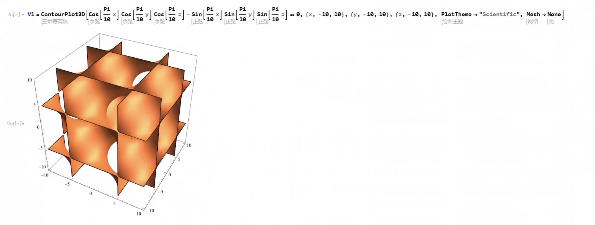
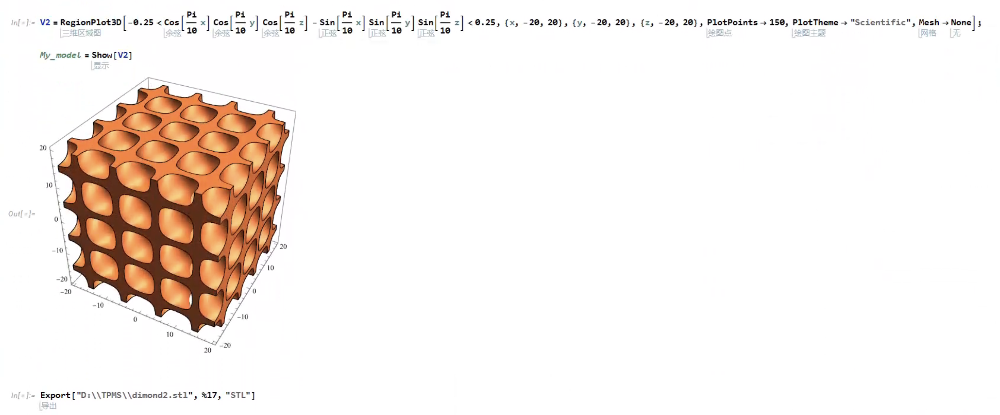
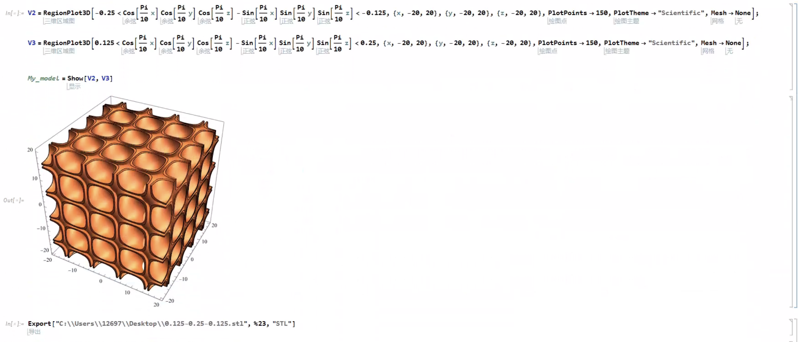

TPMS periodic single-cell integration simulation
All you need to do is teach-in programming and run script !
1.模型生成(mathematica)
模型方程参考https://mp.weixin.qq.com/s/J1FIr99urkgp4c92-9rIRA
- Gyroid
方程：sin(x) cos(y) + sin(y) cos(z) + sin(z) cos(x)
- Schwarz (Primitive)
方程：cos(x)+cos(y)+cos(z)
- Diamond
方程：sin(x)*sin(y)*sin(z)+sin(x)*cos(y)*cos(z)+cos(x)*sin(y)*cos(z)+cos(x)*cos(y)*sin(z)
- Lidinoid
方程：sin(2x) * cos(y) * sin(z) + sin(2y) * cos(z) * sin(x) + sin(2z) * cos(x) * sin(y) - cos(2x) * cos(2y) - cos(2y) * cos(2z) - cos(2z) * cos(2*x) + 0.3
- Split P
方程：1.1*(sin(2x)sin(z)cos(y)+sin(2y)sin(x)cos(z)+sin(2z)sin(y)cos(x)) -0.2(cos(2x)cos(2y)+cos(2y)cos(2z)+cos(2z)cos(2x))-0.4(cos(2x) + cos(2y) +cos(2*z))
- Neovius
方程：3*(cos(x)+cos(y)+cos(z))+4*cos(x)*cos(y)*cos(z)
- IWP
方程：2 (Cos[Pi/10 x] Cos[Pi/10 y] + Cos[Pi/10 y] Cos[Pi/10 z] + Cos[Pi/10 z] Cos[Pi/10 x]) - (Cos[Pi/5 x] + Cos[Pi/5 y] +Cos[Pi/5 z])
- Gyroid
方程：Sin[Pi/10 x] Cos[Pi/10 y] + Sin[Pi/10 y] Cos[Pi/10 z] + Sin[Pi/10 z] Cos[Pi/10 x]
- FRD
方程：4cos (x) cos (y) cos (z)-[cos (x) cos (2y)+ cos (2x) cos (2z)+ cos (2y) cos (2z)]
这里以Dimond模型为例子展示实现方法：
Shell type:  Solid type:  Sandwich type: 
2.网格划分(Magics（opt）hypermesh)
具体方法见上条blog 使用hypermesh进行网格划分，其中未完全清晰的部分： hypermesh中的网格高质量自动化重新划分工具（如同magics一样）、hypermesh当中的网格划分后能显示边线上的节点数量保持在视图当中的方法、进阶的二次开发自动化的方法
3.PBC仿真自动化及二次开发（Abaqus&python）
主要方法：首先示教一遍具体的操作步骤，注意操作的适用性，主要包含导入模型、施加材料属性、创建实例、生成inp文件等；使用abaqus.rpy或 abaqus.rec文件中记录的宏操作，新建py文件，加入所需的库，加入串联语句运行PBC节点匹配脚本；自动合并三个文件（.inp, .dat, .txt）,其中txt是预先设置的load、steps等，这里其实也可以在第一步示教加上。 最后可以实现，对同种网格类型的模型进行一次示教，就可以自动创建材料、自动施加边界条件、自动提交运算，一步到位！
在最前面加上：
from abaqus import *
from math import *
from abaqusConstants import *
import string
import os
import math
注意write input操作和run script操作如果没有被.rpy记录，可以使用以下语句唤起下一个脚本（即PBC节点匹配），此方法能很好地进行脚本的串联运行：
mdb.jobs[job_name].writeInput(consistencyChecking=OFF) execfile(PBC_FILE_dir, main.dict)
完全代码如下，注意文件间的变量传递，可以将所需的变量（文件路径、文件名）放在第一个脚本下统一输入;文件路径可以使用绝对路径，也可以使用相对路径，将所要操作的文件放在同一个目录下就很方便。
from abaqus import *
from math import *
from abaqusConstants import *
import string
import os
import math
from part import *
from material import *
from section import *
from assembly import *
from step import *
from interaction import *
from load import *
from mesh import *
from optimization import *
from job import *
from sketch import *
from visualization import *
from connectorBehavior import *
inp_dir='D:/TPMS/Gyroid.inp'
job_name='Gyroid0'
PBC_FILE_dir='D:/TPMS/node_match/node_match_3D_Shell_modi.py'
ODB_NAME='GYROID_SHELL'
mdb.models['Model-1'].PartFromInputFile(inputFileName=inp_dir)
mdb.models['Model-1'].Material(name='BXG')
mdb.models['Model-1'].materials['BXG'].Elastic(table=((179800.0, 0.26), ))
mdb.models['Model-1'].materials['BXG'].Plastic(table=((212.0, 0.0), (638.0,
0.42)))
mdb.models['Model-1'].Material(name='FOAM')
mdb.models['Model-1'].materials['FOAM'].Elastic(table=((2000.0, 0.3), ))
mdb.models['Model-1'].parts['PART-1'].CompositeLayup(description='',
elementType=SHELL, name='CompositeLayup-1', offsetType=MIDDLE_SURFACE,
symmetric=False, thicknessAssignment=FROM_SECTION)
mdb.models['Model-1'].parts['PART-1'].compositeLayups['CompositeLayup-1'].Section(
integrationRule=SIMPSON, poissonDefinition=DEFAULT, preIntegrate=OFF,
temperature=GRADIENT, thicknessType=UNIFORM, useDensity=OFF)
mdb.models['Model-1'].parts['PART-1'].compositeLayups['CompositeLayup-1'].ReferenceOrientation(
additionalRotationType=ROTATION_NONE, angle=0.0, axis=AXIS_3, fieldName='',
localCsys=None, orientationType=GLOBAL)
mdb.models['Model-1'].parts['PART-1'].compositeLayups['CompositeLayup-1'].suppress(
)
mdb.models['Model-1'].parts['PART-1'].compositeLayups['CompositeLayup-1'].CompositePly(
additionalRotationField='', additionalRotationType=ROTATION_NONE, angle=0.0
, axis=AXIS_3, material='BXG', numIntPoints=3, orientationType=
SPECIFY_ORIENT, orientationValue=0.0, plyName='Ply-1', region=Region(
elements=mdb.models['Model-1'].parts['PART-1'].elements.getSequenceFromMask(
mask=('[#ffffffff:1416 #3f ]', ), )), suppressed=False, thickness=0.2,
thicknessType=SPECIFY_THICKNESS)
mdb.models['Model-1'].parts['PART-1'].compositeLayups['CompositeLayup-1'].CompositePly(
additionalRotationField='', additionalRotationType=ROTATION_NONE, angle=0.0
, axis=AXIS_3, material='FOAM', numIntPoints=3, orientationType=
SPECIFY_ORIENT, orientationValue=0.0, plyName='Ply-2', region=Region(
elements=mdb.models['Model-1'].parts['PART-1'].elements.getSequenceFromMask(
mask=('[#ffffffff:1416 #3f ]', ), )), suppressed=False, thickness=0.4,
thicknessType=SPECIFY_THICKNESS)
mdb.models['Model-1'].parts['PART-1'].compositeLayups['CompositeLayup-1'].CompositePly(
additionalRotationField='', additionalRotationType=ROTATION_NONE, angle=0.0
, axis=AXIS_3, material='BXG', numIntPoints=3, orientationType=
SPECIFY_ORIENT, orientationValue=0.0, plyName='Ply-3', region=Region(
elements=mdb.models['Model-1'].parts['PART-1'].elements.getSequenceFromMask(
mask=('[#ffffffff:1416 #3f ]', ), )), suppressed=False, thickness=0.2,
thicknessType=SPECIFY_THICKNESS)
mdb.models['Model-1'].parts['PART-1'].compositeLayups['CompositeLayup-1'].resume(
)
mdb.models['Model-1'].rootAssembly.DatumCsysByDefault(CARTESIAN)
mdb.models['Model-1'].rootAssembly.Instance(dependent=ON, name='PART-1-1',
part=mdb.models['Model-1'].parts['PART-1'])
mdb.Job(activateLoadBalancing=False, atTime=None, contactPrint=OFF,
description='', echoPrint=OFF, explicitPrecision=SINGLE,
getMemoryFromAnalysis=True, historyPrint=OFF, memory=90, memoryUnits=
PERCENTAGE, model='Model-1', modelPrint=OFF, multiprocessingMode=DEFAULT,
name=job_name, nodalOutputPrecision=SINGLE, numCpus=1, numDomains=1,
numGPUs=0, parallelizationMethodExplicit=DOMAIN, queue=None, resultsFormat=
ODB, scratch='', type=ANALYSIS, userSubroutine='', waitHours=0,
waitMinutes=0)
mdb.jobs[job_name].writeInput(consistencyChecking=OFF)
execfile(PBC_FILE_dir, __main__.__dict__)
#PBC_node_match_souce_code
from Model_Creations_shell import ODB_NAME
from Model_Creations_shell import job_name
file_a_path = '../'+job_name+'_node.inp'
file_b_path = '../'+job_name+'.inp'
file_c_path = '../load1.txt'
with open(file_a_path, 'r') as file_a:
content_a = file_a.read()
with open(file_b_path, 'r') as file_b:
content_b = file_b.read()
with open(file_c_path, 'r') as file_c:
content_c = file_c.read()
keyword0 = '*End Assembly'
keyword1 = '*end assembly'
keyword2 = '*END ASSEMBLY'
if keyword0 in content_b:
content_b = content_b.replace(keyword0, content_a + '\n' + keyword0)
elif keyword1 in content_b:
content_b = content_b.replace(keyword1, content_a + '\n' + keyword1)
elif keyword2 in content_b:
content_b = content_b.replace(keyword2, content_a + '\n' + keyword2)
content_b += '\n' + content_c
new_file_path = ODB_NAME+'.txt'
with open(new_file_path , 'w') as ODB_NAME:
ODB_NAME.write(content_b)